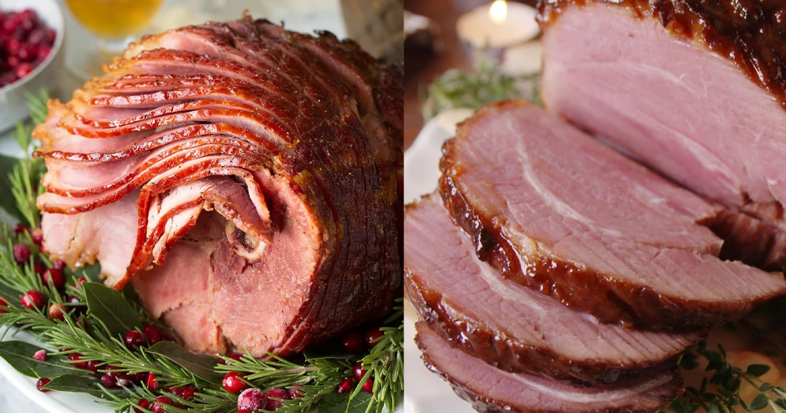
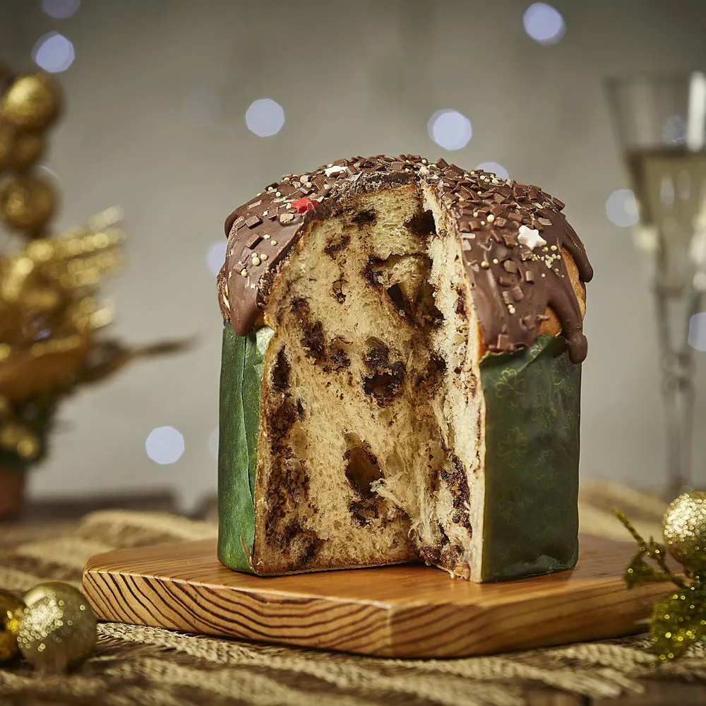

Boas festas a todos !
Nesse site você vai encontrar dicas de receitas de natal

O tender é uma das principais receitas usadas no natal,sendo um dos protagonistas com o seu sabor maravilhoso!

O panetone também é um dos doces que marcam o natal, sendo o protagonista dos doces natalino com o seus sabores impecavéis!